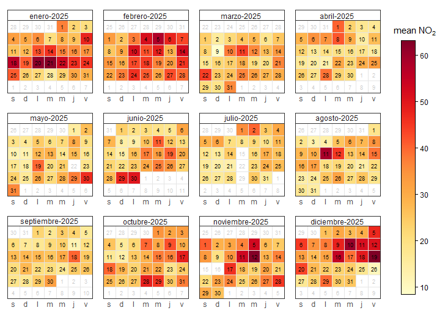
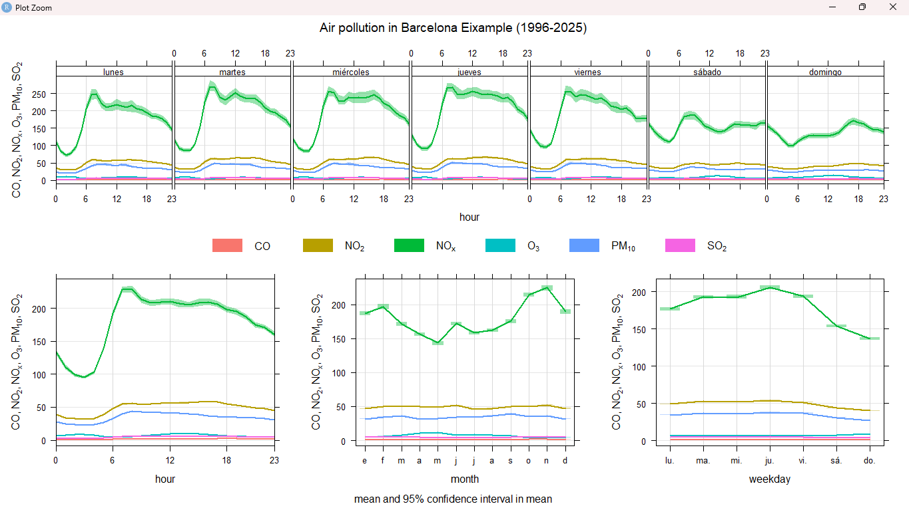
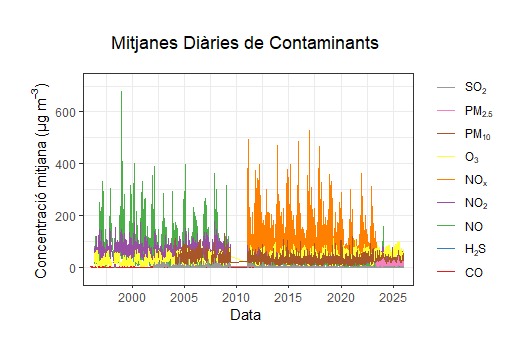
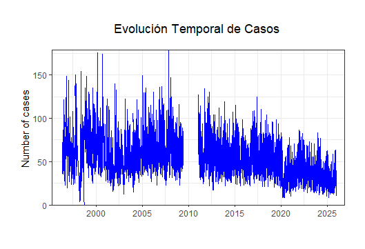

Air Pollution, Meteorological Conditions and Respiratory Infections in L'Eixample. A 14-Year Spatiotemporal Analysis
The objectives of this research are:
- Wilfredo Ospina i'm studying all data from L'Eixample, a district located in Barcelona. In this district we are using data from Air Pollution Prevention and Monitoring Network (XPVCA in catalan) corresponding to hourly data of air pollutants from year 2011 to 2025. Data included: Benzene (C6H6), Nitrogen Oxide (NO), Nitrogen Dioxide (NO2), Nitrogen Oxides (NOX) Ozone (O3), Sulphur Dioxide (SO2) and Carbon Monoxide (CO)
- Meteorological data is available from MeteoCat (Meteorological data Server of Catalonia), so we choose the meteorological station in L'Eixample. The data structure is based on semi-hourly data that is, data every 30 minutes from 2011. Data included: temperature, relative humidity, pressure, wind direction, wind speed, solar irradiance.
- Respiratory Infection data are collected from Catalonia Information System for Infection Surveillance (SIVIC) using data from Barcelona, and the corresponding identifiers for the Primary care centers from L'Eixample.
Calendar Plot

The Calendar Plot provides a daily record of air quality throughout the year 2025. Each square represents a specific day, and the color indicates the concentration of NO2
How to read the colors
- Yellow/Light Tones: These represent clean air. These days are usually windy or rainy, which helps clear the sky.
- Orange/Red Tones: these represent higher pollution. The darker the red, the more pollutants were in the air. On these days, people with breathing difficulties might feel more tired or uncomfortable.
The Winter Trap
- Look at January and February. You will see many dark orange and red squares. In winter, the ground is cold, and a layer of heavy air sits on top of the city.
- Look at August. Most of the squares are light yellow. This is because many people leave the city for vacation, so there are fewer cars. Also, the summer heat creates currents that push pollution high up into the sky and away from us.
- If you look closely at the rows, most of the weekends are often lighter than the weekdays. This shows that when schools and offices are closed, the air improves almost immediately.
The Summer Break
The Weekend
TimeVariation

Air pollution is not constant, it rises and falls based on our daily routines. The first chart shows that the air follows a "work schedule."
Rush Hour Peaks
There are two times during the day when harmful gases (like NOX, which comes from vehicle exhausts) reach their highest levels
- 8:00 AM: When people drive to work or drop children off at school.
- 8:00 PM: When people return home.
These blue peaks on the chart represent the "fingerprint" left by our morning and evening commutes.
Monthly Pattern
The Winter Rise: The blue and green lines (traffic gases) are much higher in January and December. During these months, the air is cold and still, which prevents pollution from blowing away.
The Summer Rise: The purple line (Ozone) is highest in July and August. The more sun and heat there is, the more Ozone is produced in the atmosphere.
The Sun and Ozone (O3)
Ozone is a unique pollutant. It does not come directly out of a car. Instead, it is created when sunlight hits other pollutants already in the air. This is why the purple line on the chart rises at midday when the sun is strongest and drops at night.
The Weekend Break
If you compare different days of the week, Sunday is the cleanest day. Because there are fewer delivery trucks and fewer people commuting, the air gets a chance to clear up. This is usually the best time for outdoor activities.
TrendLevel

Trendlevel is a very large table that shows the history of Nitrogen Dioxide (NO2) every single day from 2011 until 2025. This is the best way to see if our city is actually getting cleaner over time.
How to Read the "Heat"
- Vertical Axis: This shows the hours of the day (0 to 24).
- Horizontal Axis: This shows the months (January to December).
- Colors: Dark red and orange mean "High Pollution." Blue and green mean "Clean Air."
- A Cleaner Decade: Look at the top rows (2011–2014). You will see large blocks of dark orange and red, especially during the morning and evening hours. This was a period of high pollution.
- The Shift to Blue: Look at the bottom rows (2023–2025). The red areas are much smaller and lighter. There is a lot more blue and green across the whole year. This visual change proves that new technology, electric vehicles, and environmental rules in L'Eixample are working.
- Even in the most recent years, you can still see yellow and orange stripes at the top and bottom of the daily cycle (8:00 AM and 8:00 PM). This reminds us that while the air is better, the "rush hour" traffic is still the biggest challenge we face.
- You may notice some completely white squares in the graphic. These are not zero pollution days. Instead, they represent moments when the measuring station stopped working. Like any machine, sensors can fail due to power cuts, maintenance, or extreme weather, leaving a gap in the data.
The Improvement
The Constant Problem
The White Squares
Daily Averages

This graphic shows the daily averages of the main air pollutants. Each colored line represents a different substance measured in micrograms per cubic meter.
Pollutants
- The purple line (NOx - Nitrogen Oxides): Is the line with the most movement and the one that reaches the highest peaks. These gases come mainly from car exhausts and industrial activity.
- The brown line (O3 - Ozone): It rises in summer and falls in winter. Unlike others, ozone does not come directly from an exhaust, it is formed when other pollutants are exposed to the sun. That's why it always rises when it's hotter.
- The lower lines (SO2, CO, C6H6): substances like carbon monoxide or benzene are very close to zero. This is good news, as it indicates that certain types of industrial and old fuel pollution are under control.
- L'Eixample: Has never exceeded 200 micrograms per cubic meter.
- According to European regulations, this level can only be exceeded 18 times.
- At L'Eixample, the level has been between 125 and 200 micrograms per cubic meter only 6 times.
- Does it comply with the law? European law states that in one year the maximum number of times that 200 micrograms per cubic meter of nitrogen dioxide (NO2) can be exceeded is 18. We have observed that it has never reached 200 micrograms per cubic meter, but it has been between 125 and 200 micrograms per cubic meter only 6 times in 14 years.
- In 2025, it recorded 0 hours. In 2012, it exceeded the limit 5 times.
- The pollutant CO has not exceeded the annual limit in any of the 15 years analyzed (0% of the period).
- Total days exceeding the limit: 0
- Total hours exceeding the limit: 0
- The pollutant NO2 has not exceeded the annual limit in any of the 15 years analyzed (0% of the period).
- Total days exceeding the limit: 0
- Total hours exceeding the limit: 0
- The pollutant O3 has not exceeded the annual limit in any of the 15 years analyzed (0% of the period).
- Total days exceeding the limit: 0
- Total hours exceeding the limit: 798
- The pollutant SO2 has not exceeded the annual limit in any of the 15 years analyzed (0% of the period).
- Total days exceeding the limit: 0
- Total hours exceeding the limit: 0
- The most problematic pollutant during the period 2011–2025 has been CO, with 0 years exceeding the annual limit.
- The most critical year of the period was 2011, with 0 pollutants exceeding the annual limit.
- The analysis of air pollution in L'Eixample during the period 2011–2025 shows that air quality has presented recurring breaches of European legal limits, especially for pollutants associated with traffic and industrial activities.
Overcomings
Sivic

This graphic from SIVIC shows how health issues in L'Eixample change over time. We can look at specific diseases, age groups, sex...
Covid-19
- The majority of the medical cases recorded from 2020 onwards are due to COVID-19. This explains the spikes that break the normal rhythm of previous years.
Specific Age Groups Are Affected More
- The impact of these diseases is not the same for everyone. Respiratory illnesses often target a specific age group.
- Children and the Old People: These two groups are the most vulnerable. Children have developing lungs. The old people often have weaker immune systems.
- When analyzing the data by sex, the results are very similar for both men and women.
- The lower lines (SO2, CO, C6H6): substances like carbon monoxide or benzene are very close to zero. This is good news, as it indicates that certain types of industrial and old fuel pollution are under control.
- To know the origin of air pollution in L'Eixample is easy with RStudio
- We only need data in columns named WS for wind speed, WD for wind direction and to choose a pollutant e.g.: NO2. These are conditions of the openair library
in order to create a pollution rose with the instruction:
pollutionRose(cityall, pollutant="no2") - This is a Pollution Rose. It works like a compass, showing exactly which direction the wind blows from when the air in L'Eixample contains high levels of Nitrogen Dioxide (NO2).
- The Petals: The length of each section shows how often the wind blows from that direction.The Colors: Orange and dark red represent high pollution levels. Green and yellow represent clean air.
- The Colors: Orange and dark red represent high pollution levels. Green and yellow represent clean air.
- As you can see in the following image air pollution of L'Eixample comes from the surrounding areas of high traffic.
- The Polar Plot goes a step further than the previous graph. It shows how pollution changes based on two things at the same time: the direction of the wind and the speed of the wind.
- Distance from the center: The closer to the center , the weaker the wind is. The further out, the stronger the wind blows.
- The Colors: Purple and dark red show the highest pollution (NO2). Blue and green show clean air.
- The highest pollution (dark purple) happens right in the center when the wind speed is nearly zero. When the air does not move, traffic emissions from local streets cannot escape and accumulate quickly around the station.
- This map takes the polar plot and overlays it directly onto the real map of L'Eixample, centering it right on the measuring station. It shows exactly which roads and infrastructures are causing the pollution.
- This colored overlay sits directly over main avenues like Gran Via and Carrer d'Aragó.
- It proves that when the wind blows from these directions, it carries the heavy emissions from dense urban traffic straight to the monitoring station.
- Excess NO2 generates 0.13 extra cases of respiratory infections per 1,000 inhabitants.
- This equates to 13 extra cases of respiratory infections per 100,000 inhabitants.
- Context: L'Eixample has a population of approximately 266,000.
- 6,54% of respiratory infection cases are caused by excess NO2
- Number of days with exceedances = 3,484 days
- Total number of analyzed days = 5,191 days
- k = no of observed cases
- λ = Average Incidences
- λ 0= 1,85 (low)
- λ 1= 1,98 (high)
- NO2 Axis (Bottom left): Shows the concentration of the pollutant. Values range from low levels (near 20) to high levels (above 60μg/m3).
- Lag Axis (Bottom right): Represents the "lag" or the number of days that pass from when a person breathes the polluted air until the illness manifests (from 0 to 14 days).
- Relative Risk Axis (Vertical): Indicates by how much the probability of getting sick is multiplied. The reference value is 1.00 (normal risk). Anything above 1.00 signifies an increased risk, and anything below 1.00 indicates a risk lower than average.
- Delayed and Cumulative Effect: Contrary to what it might seem, the risk is not immediate. At Lag 0 (front right) the risk is low, but as NO2 rises toward 60 and we move toward higher lag days (Lag between 5 and 14 days, in the background), the surface rises significantly, exceeding 1.05.
- Upward Slope: This upward tilt statistically demonstrates that severe pollution acts in the medium term; the health impact on citizens escalates, and the true peak of hospital admissions appears days after the exposure.
No Significant Difference Between Men and Women
What is the Origin of Air Pollution in L'Eixample
.png)

Polar Plot
.png)
Polar Map

1. RR = Relative Risk
General formula:
$$RR = \frac{I_e}{I_0} = \frac{\text{Incidence Exposed}}{\text{Incidence Unexposed}}$$
Days are divided based on whether NO2 exceeds the WHO daily guideline value: (25μg/m3)
High Exposure (NO2 > 25μg/m3) Average Incidence = 1,98 cases / 1000 (3484 days)
Low Exposure (NO2 ≤ 25μg/m3) Average Incidence = 1,85 cases / 1000 (1734 days)
$$RR = \frac{1,98}{1,85} \approx 1,07$$
RR > 1 = 1,07 indicates a harmful effect.
2. AR = Attributable Risk
General formula:
$$AR = I_e - I_0$$
$$AR = 1,98 - 1,85 = 0,13$$
$$\frac{0,13 \text{ casos}}{1.000 \text{ hab.}} \cdot 266 = 35 \text{ cases in L'Eixample}$$
3. AR% = Attributable Risk Percentage
General formula:
$$AR\% = \frac{RR - 1}{RR} \cdot 100$$
$$AR\% = \frac{1,07 - 1}{1,07} \cdot 100 = 6,54\%$$
NO2 Exceedances:
$$\frac{3.184}{5.191} = 0,613 \rightarrow 61,3\%$$
On 61.3 % of the days, the maximum recommended levels of 25μg/m3 by the World Health Organization are exceeded. We have calculated with R the daily limit of 40 μg/m3 (EU legal limit) and it has given us $$\frac{5}{24} = 0,21 $$ 0,21 days in 15 years (2011-2025) The EU legal limit is exceeded. European law says that it can be exceeded 18 times every year.
Poisson Model
$$P(X = k) = \frac{\lambda^k \cdot e^{-\lambda}}{k!}$$
Definition of variables:
$$P(X = 2) = \frac{1,85^2 \cdot e^{-1,85}}{2!} = 0,269 \rightarrow 26,9\%$$ probability of 2 cases if pollution ↓
$$P(X = 2) = \frac{1,98^2 \cdot e^{-1,98}}{2!} = 0,271 \rightarrow 27,1\%$$ probability of 2 cases if pollution ↑
If NO2 pollution is low, there is a 26.9 % probability of having 2 cases per 1000 inhabitants.
If NO2 pollution is high, there is a 27.1 % probability of having 2 cases per 1000 inhabitants.
P = Probability of 2 cases of respiratory infections per 1000 inhabitants based on a mathematical Poisson model that has taken into account the daily data of 15 years (2011-2025) of infections and air pollutants (NO2 , O3 , etc.) at the primary care centers in L'Eixample. We know that the data has been obtained from the XPVCA database (Air Pollution Prevention and Monitoring Network) and SIVIC (Information System for Surveillance in Catalonia).
Therefore, the probability of 2 respiratory infections per every 1,000 inhabitants of L'Eixample is 26.9% if NO2 levels are low, meaning below the WHO limit of (25μg/m 3 ) on the other hand, if the NO2 pollution level is high, above the WHO, we will have a 27.1% probability.
High exposure: 3184 days
$$\frac{3.184}{5.191} = 0,613 \rightarrow 61,3\%$$
Low exposure: 1734 days
$$\frac{1.734}{5.191} = 0,334 \rightarrow 33,4\%$$
% of days with low and high exposure.
Total Probability / Bayes' Theorem
$$P(X = 2) = (0,613 \cdot 0,271) + (0,334 \cdot 0,269) = 0,256 \rightarrow 25,6\%$$
The director tells us that an incidence of 1% is worrying.
DLNM (Distributed Lag Non-linear Model)
This mathematical model was created by Gasparrini et al. (2010). Pollutants have a lag time with respect to health; that is, there is not always an immediate effect. In many cases, they can cause an effect later on.
These models are non-linear because, if they were linear, it would mean that an increase in pollution causes a proportional increase in respiratory cases. Although this might seem logical, it is not exactly how it works. An increase of 5μg/m3 of NO2 does not have the same impact if it increases from 5 to 10 as it does if it increases from 40 to 45. In other words, it is a curve rather than a straight line.
The delays are called LAG and can be equal to 0 (no delay) or any number between 0 and 14. If the LAG is equal to 14, it means that two weeks pass between the peak of the pollutant and the peak of the health problems.
Reference
Gasparrini, A. ; Armstrong, B. ; Kenward, M.G. (2010). Distributed lag non-linear models. Stat. Med. 29 (21):2224-34. DOI: https://doi.org/10.1002/sim.3940

This graph shows a 3D Response Surface generated using an advanced statistical model called DLNM (Distributed Lag Non-linear Models). Its objective is to show how NO2pollution levels relate to the risk of suffering respiratory diseases over time. The graph is read by analyzing three axes simultaneously:
What is observed in the shape of the black surface?
Conclusion
Overall, the graphics show that nitrogen dioxide (NO2) levels in L'Eixample change depending on the time of day, month, and year, with higher concentrations usually appearing during peak activity hours, likely related to traffic and urban activity. In 2025, most days present low or moderate pollution levels, meaning that air quality is generally acceptable, although some days show higher concentrations. In addition, we analyzed health data from the SIVIC system and compared it with the pollution levels. This comparison suggests that air pollution may be related to certain respiratory diseases, since higher pollution periods can coincide with increases in health incidents. That's why, the study indicates that air quality can have an impact on public health, highlighting the importance of monitoring pollution levels and reducing emissions to protect people’s health. To understand this impact, our Pollution Rose, Polar Plot, and Polar Map reveal that the highest NO2 concentrations are coming from the main traffic arteries, aligning directly with major grid avenues such as Gran Via de les Corts Catalanes and Carrer d'Aragó. Furthermore, a significant localized source is identified in the constant flow of vehicles, where intense urban traffic feeds directly into the urban wind path. According to weather data from Meteocat, while eastern sea breezes keep the city clean, winter inversions and calm, windless conditions trap all these traffic emissions right at ground level, creating the high-pollution seen at the center of the Polar Plot where wind speed is nearly zero. This trapped pollution is a direct trigger for the respiratory medical cases recorded by SIVIC, which show that from 2020 onwards, the majority of cases are linked to COVID-19 and winter flues; although these are viral infections, poor air quality inflames the lungs and weakens the body's natural defenses. This biological vulnerability is rigorously confirmed by our DLNM (Distributed Lag Non-linear Model) 3D surface, which proves that the health impact of high NO2 concentrations (above 60μg/m3 ) is not just immediate, but cumulative, showing a significant delayed effect where the relative risk of respiratory admissions escalates and peaks between 5 and 14 days after exposure. Finally, the health data shows no noticeable difference between men and women because air is a shared resource, but it highlights a high vulnerability among specific age groups, showing that children and the elderly are the primary victims when these environmental, industrial, and delayed biological factors align.